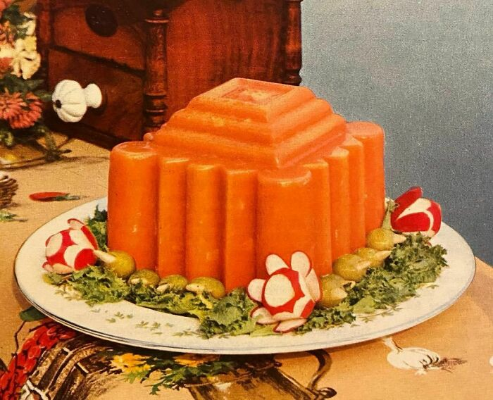

Ham Buffet Mold

A classic retro dish featuring a savory blend of cheese, soup, and ham, molded to perfection and chilled for a delightful appetizer.
Perfect for parties and gatherings.
Ingredients
- 1 envelope unflavored gelatin
- 1/4 cup cold water
- 1 can (10 1/2 ounces) Campbell’s Cream of Mushroom Soup
- 1 package (8 ounces) cream cheese, softened
- 1/2 cup mayonnaise
- 1 tablespoon lemon juice
- 1 tablespoon prepared horseradish
- 2 cups cooked ham, finely chopped
- 1/2 cup celery, finely chopped
- 1/4 cup green pepper, finely chopped
- 1/4 cup onion, finely chopped
- Salt and pepper to taste
Steps
- Soften gelatin in cold water.
- In a medium saucepan, heat Campbell’s Cream of Mushroom Soup over low heat until hot.
- Stir softened gelatin into the hot soup until completely dissolved. Remove from heat.
- In a large bowl, beat cream cheese until smooth.
- Gradually blend the hot soup mixture into the cream cheese.
- Stir in mayonnaise, lemon juice, and horseradish until well combined.
- Fold in the finely chopped ham, celery, green pepper, and onion.
- Season with salt and pepper to taste.
- Pour the mixture into a lightly greased mold or loaf pan.
- Cover and refrigerate until firm, about 4 hours or overnight.
- Unmold onto a serving platter and serve chilled. Garnish as desired.
Let's go home...